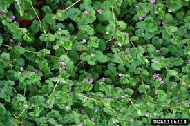

Lierre terrestre ou Herbe de Saint-Jean

Lierre terrestre ou Herbe de Saint-Jean (Glechoma hederacea de la famille des Lamiacées)
Attention : hautement toxique par ingestion pour le Korat !
Partie toxique pour les chats en général et le Korat en particulier :
Toute la plante.
Symptômes du processus pathologique :
Transpiration, tremblements, manque d'appétit, écoulements muqueux hors de la gueule, de mousse rougeâtre jaunâtre hors du nez, respiration difficile, tachypnée, augmentation anormale de la fréquence respiratoire, râle, toux, Tachycardie (fréquence cardiaque au-dessus de 100 pulsations par minute) avec un pouls faible.